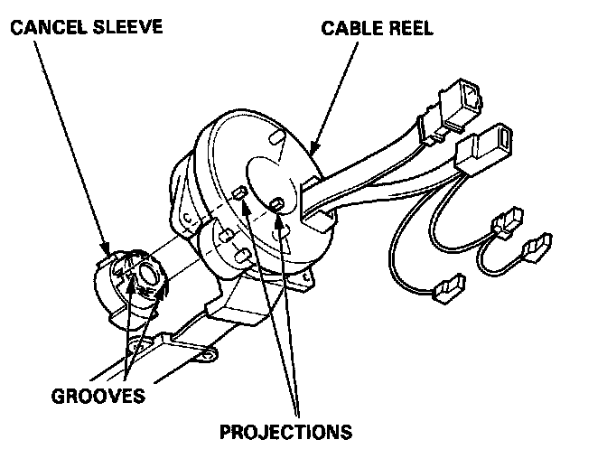
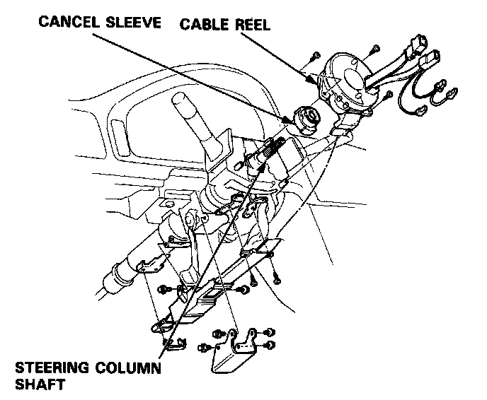
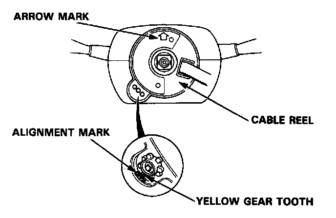
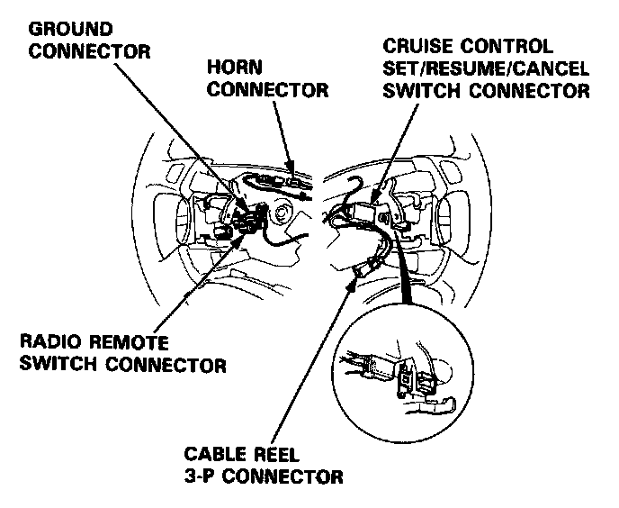
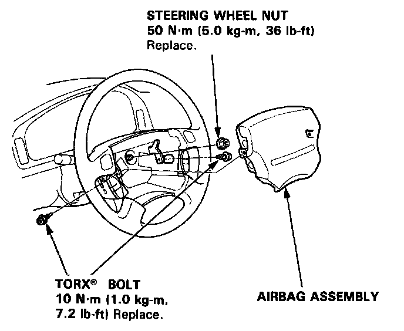
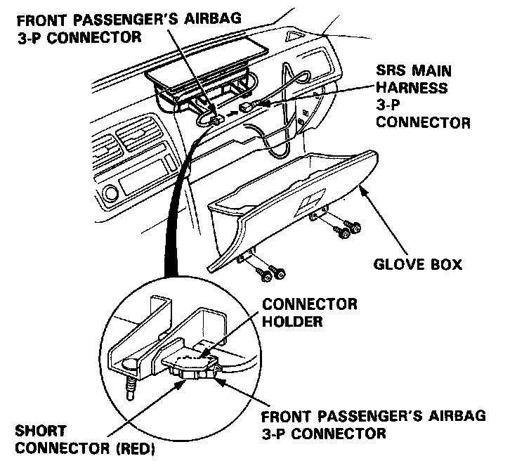
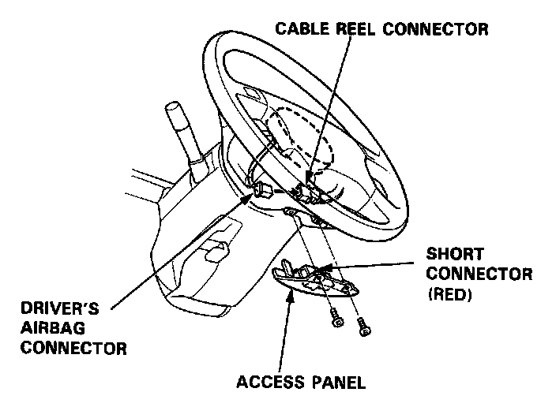
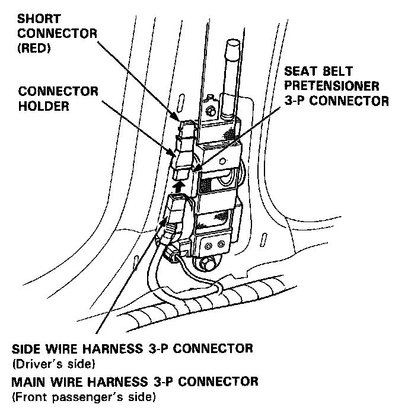
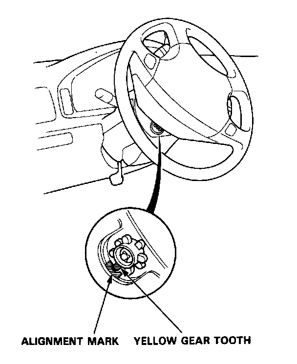

Cable Reel Installation
Cable Reel Installation
CAUTION:
- Before installing the steering wheel, the front wheels should be aligned straight forward.
- Be sure to install the harness wires so that they are not pinched or interfering with other car parts.
- After reassembly, confirm that the wheels are still aligned straight ahead and that the steering wheel spoke angle is correct. If minor spoke angle adjustment is necessary do so only by adjusting of the tie-rods, not by removing and repositioning the steering wheel.
1. Align the cancel sleeve grooves with the cable reel projections.

2. Carefully install the cable reel and the cancel sleeve on the steering column shaft. Reinstall the cover.

3. Install the steering column upper and lower covers.
4. Center the cable reel. Do this by first rotating the cable reel clockwise until it stops. Then rotate it counterclockwise (about two turns) until:
- The yellow gear tooth lines up with the mark on the cover.
- The arrow on the cable reel label points straight up.

5. Install the steering wheel and attach the cruise control connector and cable reel connector to their clips.

6. Connect the horn connector, radio remote switch connector,and ground connector.
7. Install the steering wheel nut.
8. Install the driver's airbag assembly.

9. Connect the cable reel harness to the SRS main harness, then attach the connector holder to the steering column.
10. Install the dashboard lower cover.
11. Remove the short connector (RED) from the front passenger's airbag, and the short connector A from the SRS main harness.
12. Connect the front passenger's airbag connector to the SRS main harness connector, then install the glove box.

13. Remove the short connector (RED) from the driver's airbag, and the short connector A from the cable reel.
14. Connect the driver's airbag connector to the cable reel connector. Attach the short connector (RED) to the access panel, then reinstall the panel on the steering wheel.

15. Remove the short connectors (RED) from the seat belt pretensioners, then attach the short connectors (RED) to their holders.
16. Connect the side wire harness connector (left side) and the main wire harness connector (right side) to the seat belt pretensioners.

17. Reconnect the battery positive cable, then the negative cable.
18. After installing the cable reel, confirm proper system operation:
- Turn the ignition to II; the instrument panel SRS light should go on for about 6 seconds and then go off.
- Confirm operation of horn buttons.
- Confirm operation of the lighting and wiper switches.
- Confirm operation of cruise control set/resume/cancel switch.
- Enter the customer's code number to restore radio operation.
- Rotate the steering wheel counterclockwise to make sure the yellow gear tooth lines up with the slot on the cover.
